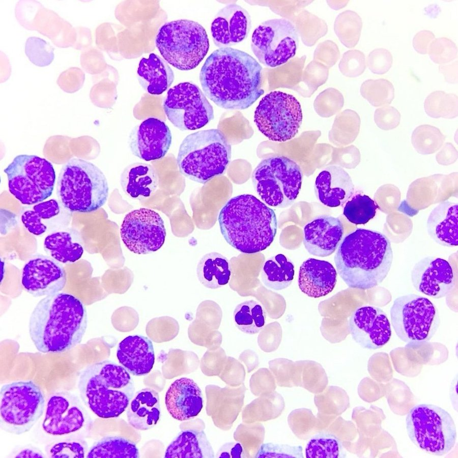

Trabajo Grupal - Grupo 2
Integrantes:

Arantxa González
Como dato freak me gusta observar en el microscopio los frotis de preparados sanguineos , me gusta las formas y los colores que adquieren las celulas al ser teñidas.
Visita mi página